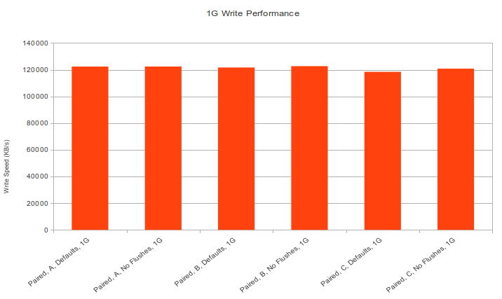

A DRBD Configuration Options Shootout!
DRBD is the bomb. Think Raid 1 over the network between two servers. It enables sysadmins (in combination with heartbeat) to increase service uptime, while enabling server downtime. This means you can do kernel updates, do hardware maintenance, upgrade ram, move the server to another rack, etc, all while keeping the service up.
Because DRBD is often used in high availability scenario, there isn’t much room for experimentation with in-production systems. However, recently I had the opportunity configure DRBD on a pair of servers a couple of weeks before they were needed to be in service. I took the opportunity to benchmark different configurations of DRBD. Now, you might look at my graphs and say, “Oh, obviously the performance is like that”, but I would say it is not so obvious.
Philosopher’s Corner
A bit of philosophy here, sometimes we are tempted to claim knowledge about a certain subject. For example someone might say that “Intel is faster than AMD” or “Fords are better than Chevy’s”, or “DRBD protocol A (asynchronous replication) is faster than protocol C (fully synchronous replication)”. But when someone makes claims like this, often they do not believe that what they are saying is simply an opinion. They are claiming to have knowledge about the subject.
In order to claim to have knowledge about something, many philosophers believe that in order to claim to have knowledge you have to have three things:
What you are claiming is actually true.
You have to believe what you are saying.
You have to have justification for your claim.
For many of us, we don’t even get past step 1. Even if we do get past step 1 then we rarely get 3. With the case of DRBD, now that I have done these benchmarks I can feel confident to make claims. Not only will I believe myself, but I’m pretty sure they are actually true, and I will be justified as I have actually run tests to back up my claims.
Onto the Benchmarks
My test setup is a pair of 2U Silicon Mechanics servers. Here are their specifics:
Single Xeon (quad core) CPU (for storage servers, you don’t need tons of cpu, even this is overkill)
24 GB Ram (Nice! Ram is cheap and gives an awesome speed boost to repeatedly accessed data)
8X 3TB Seagate SAS drives (3T isn’t the best $/GB, but it is nice to go high)
3ware 9750-4i raid controller with BBU (If I could splurge on anything, this is it. I love 3ware raid cards)
10g Ethernet card (only used for testing, not in final production)
Raid 6 across all 8 drives. XFS as the filesystem (Right now XFS is the filesystem of choice for large arrays, and raid6 is the only way to go with raid arrays this large if you need the space)
Basically I took these potential variables in a DRBD configuration and permutated all of them:
DRBD replication protocols A, B, C (Which protocol is right for me? Does it matter?)
DRBD backing flushes on and off (This makes my computer really fast right?)
10G or 1G in a “crossover” between the two servers (Won’t this make my nosql queries return 10x faster?)
Paired or in disconnected mode (How does being disconnected impact performance?)
My testing methodology was to configure DRBD in the test configuration, wait for the synchronization to finish, then make one node primary and mount the filesystem. From there I ran the Bonnie++ benchmark program (version 1.03), and then record the results. If you want my raw data, here it is. But I will also try to distill the data and share some conclusions.
DRBD In Stand Alone Mode

The differences in speed here are within the standard deviation of just running bonnie, the only conclusion I would draw here is that in stand-alone mode the read and write speed of the array is the same as without drbd. (Sorry I don’t have the non-drbd on the list). This is mostly expected, but how can we know without testing?
Testing Read Speed

With Read speeds across every configuration are about the same. There are some high and lows but they are within the standard deviation of Bonnie runs. I wish I had even more time to run many Bonnie runs and average them. The conclusion I take away from this is that DRBD does not impact the read speed performance. Again this is kinda expected, but_ I wasn’t about to claim to know this without testing_. As such from now on I will be focusing on write performance. Again, no matter what your DRBD configuration, your disk read speed should be around the same as if you didn’t have DRBD.
10G versus 1G

Here I’m comparing paired DRBD configurations with a 1g Ethernet crossover versus a 10g Ethernet crossover. As mentioned before, no matter what your connection is, the read speed is the same. You could have a 16mb Token Ring adapter between the two servers and the read speed would be the same. It is the write speed that changes. Here the 10g Ethernet gives us a tangible speed increase. For about $1.5k (at the time of this writing) you can throw in 2X 10g cards and a copper crossover and get the full potential write speeds out of your disks. Now, of course if these servers are only connected to client computers via 1g and not much disk IO happens on the server itself, this upgrade may not pass the cost/benefit test. But it is good to know what it would be like if you did take the 10g plunge.
Protocol Choice and Flushes Impact on Write Speeds

{kind=link}
With the write speeds brought up next to each other it is easier to see the speed differences between the different protocols and whether disabling disk flushes matters. Here is a hint: it doesn’t matter. Well, at least with my particular situation it doesn’t matter. When the servers are linked together in a crossover situation (a very common scenario), the latency is so low that the protocol choice is mostly inconsequential. The bottom line is that most people can afford protocol C (completely synchronous replication).
Regarding flushes, with my particular raid card with a BBU, the raid card basically lies to Linux when it asks to do a flush anyway. This is because it is “OK” for the 3ware card has a battery on its cache, so it is “safe”. If I didn’t have a battery or if it was faulty these charts would probably look different. (Maybe my next blog post) In other situations where a battery-backed raid card is not in use, disabling the flushes would bring the write speeds up to this level, but at a cost of a risk of losing data upon a power loss. (serious data, see http://www.drbd.org/users-guide/s-disable-flushes.html for more info). The bottom line here is that you should not disable flushes. Let Linux and your Raid card make the right decision for you.
Conclusions (skip to here for the TL;DR version)
Benchmarks on other people’s stuff are worthless, do them yourself to see what happens on your OS with your raid card and your disks, etc.
If you DRBD servers are in the same datacenter and not replicating over a WAN, stick with protocol C, the performance cost is negligible.
If you need full speed writes, you must use 10G Ethernet to do DRBD replication. If your total input to the server is 1G anyway, you probably can get by without it.
Don’t disable DRBD’s flushes. If you need the speed, use a battery backed raid card and let it give you the equivalent write speed boost.
Do not be confused, read speeds are not impacted by DRBD. If your workload is mostly reads, DRBD gives you super uptime for basically the cost of another server.
In disconnected mode, the write and read performance is the same as if you didn’t have DRBD in the first place, so it doesn’t hurt you. (In fact on 1G it will probably speed up your writes)
DRBD involves many facets, the OS, raid cards, disks, networking throughput, latency, etc. It is a complicated system and is difficult to draw performance conclusions without testing. Measurement is knowing. I am by no means immune to inconsistent logic and bad testing methodologies. Please email me or leave a comment if you know something is wrong so I can fix it and not pollute the internet with false information.